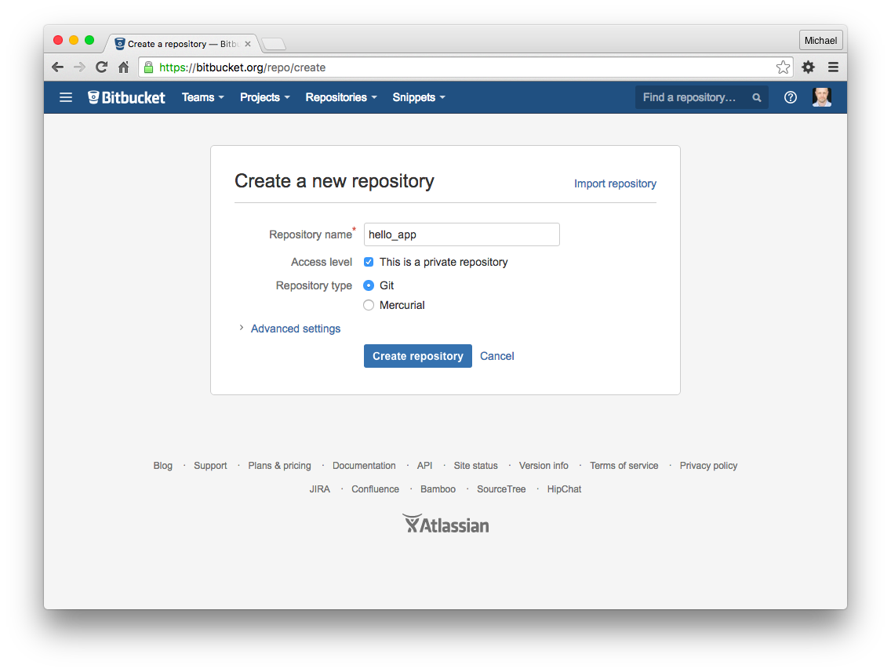

Ruby on Rails uses sqlite3 as its default database.
But it may not be sufficient for your application.
For scalability, centralization, and control we will use PostgreSQL or MySQL.
Create a new Rails application in your home directory. Use the -d mysql option to set MySQL as the database, and be sure to substitute the highlighted word with your application name:
cd ~
rails new appname -d mysql
It will create the structure of your application and also install the gems and other dependencies
Then move into the application's directory:
cd appname
The next step is to configure the application's database connection.
If you followed the MySQL install instructions from this tutorial, you set a password for MySQL's root user. The MySQL root login will be used to create your application's test and development databases.
Open your application's database configuration file in your favorite text editor. We'll use emacs:
emacs config/database.yml
Under the default section, find the line that says "password:" and add the password to the end of it. It should look something like this (replace the highlighted part with your MySQL root password):
password: mysql_root_passwordSave and exit.
Create your application's development and test databases by using this rake command:
rake db:createThis will create two databases in your MySQL server. For example, if your application's name is "appname", it will create databases called "appname_development" and "appname_test".
The easiest way to test that your application is able to use the MySQL database is to try to run it.
For example, to run the development environment (the default), use this command:
rails serverThis will start your Rails application on your localhost on port 3000.
Before using Git, you should perform a couple of one-time setup steps. These are system setups, meaning you only have to do them once per computer:
$ git config --global user.name "Your Name"
$ git config --global user.email your.email@example.comThe first step is to navigate to the root directory of the app and initialize a new repository:
$ git init
Initialized empty Git repository in /home/ubuntu/workspace/hello_app/.git/The next step is to add all the project files to the repository using git add -A:
$ git add -AThis command adds all the files in the current directory apart from those that match the patterns in a special file called .gitignore
The added files are initially placed in a staging area, which contains pending changes to our project. We can see which files are in the staging area using the status command
$ git status
On branch master
Initial commit
Changes to be committed:
(use "git rm --cached file..." to unstage)
new file: .gitignore
new file: Gemfile
new file: Gemfile.lock
new file: README.md
new file: Rakefile
.
.
.
To tell Git we want to keep the changes, we use the commit command:
$ git commit -m "Initialize repository"
[master (root-commit) df0a62f] Initialize repository
.
.
. Now that we’ve put our project under version control with Git, it’s time to push our code up to Bitbucket
$ cat ~/.ssh/id_rsa.pubOnce you’ve added your public key, click on “Create” to create a new repository,
$ git remote add origin git@bitbucket.org:/hello_app.git
$ git push -u origin --all The commands first tell Git that you want to add Bitbucket as the origin for your repository, and then push your repository up to the remote origin
$ git checkout -b branch_name
Switched to a new branch 'branch_name'
$ rails g controller home
Running via Spring preloader in process 17742
create app/controllers/home_controller.rb
invoke erb
create app/views/home
invoke test_unit
create test/controllers/home_controller_test.rb
invoke helper
create app/helpers/home_helper.rb
invoke test_unit
invoke assets
invoke coffee
create app/assets/javascripts/home.coffee
invoke scss
create app/assets/stylesheets/home.scss
class HomeController < ApplicationController
end
class HomeController < ApplicationController
def index
end
end
Rails.application.routes.draw do
root 'home#index'
.
.
end
This is the home page
$ git status
On branch home
Changes not staged for commit:
(use "git add file..." to update what will be committed)
(use "git checkout -- file..." to discard changes in working directory)
modified: config/routes.rb
Untracked files:
(use "git add file..." to include in what will be committed)
app/assets/javascripts/home.coffee
app/assets/stylesheets/home.scss
app/controllers/home_controller.rb
app/controllers/home_controller.rb~
app/helpers/home_helper.rb
app/views/home/
config/#routes.rb#
config/.#routes.rb
test/controllers/home_controller_test.rb
app/controllers/home_controller.rb~, config/#routes.rb# some unnecessary files are present in the list. So we will not commit those file.
To ignore these file open .gitignore file and add the following
*~
*#
$ git add .$ git add app/helpers/home_helper.rb app/views/home/ $ git status
On branch home
Changes to be committed:
(use "git reset HEAD ..." to unstage)
modified: .gitignore
new file: app/assets/javascripts/home.coffee
new file: app/assets/stylesheets/home.scss
new file: app/controllers/home_controller.rb
new file: app/helpers/home_helper.rb
new file: app/views/home/index.html.erb
modified: config/routes.rb
new file: test/controllers/home_controller_test.rb Now we will commit these changes
git commit -m "add home controller" -a$ git checkout master
$ git merge home
Updating e6ae8cf..7bf82bd
Fast-forward
.gitignore | 3 +++
app/assets/javascripts/home.coffee | 3 +++
app/assets/stylesheets/home.scss | 3 +++
app/controllers/home_controller.rb | 4 ++++
app/helpers/home_helper.rb | 2 ++
app/views/home/index.html.erb | 1 +
config/routes.rb | 6 +-----
test/controllers/home_controller_test.rb | 7 +++++++
8 files changed, 24 insertions(+), 5 deletions(-)
create mode 100644 app/assets/javascripts/home.coffee
create mode 100644 app/assets/stylesheets/home.scss
create mode 100644 app/controllers/home_controller.rb
create mode 100644 app/helpers/home_helper.rb
create mode 100644 app/views/home/index.html.erb
create mode 100644 test/controllers/home_controller_test.rb
Create a new branch from master
$ git checkout -b add_bootstrapOpen Gemfile, add "gem 'bootstrap-sass'" to list and do bundle
Now go to app/assets/stylesheets folder, change filename application.css to application.scss, remove all the content and add the following
@import "bootstrap-sprockets";
@import "bootstrap";
Open app/assets/javascripts/application.js file and add the following
//= require bootstrap-sprockets//= require turbolinks
<html>
<head>
TestApp
<%= stylesheet_link_tag 'application', media: 'all' %>
<%= javascript_include_tag 'application' %>
<%= csrf_meta_tags %>
</head>
<body>
<%= render "layouts/navbar" %>
<%= yield %>
<%= javascript_tag do %>
<%= yield :javascript %>
<% end %>
</body>
</html>
<%= render "layouts/navbar" %>
Devise is a flexible authentication solution for Rails application
For documentation you can go through https://github.com/plataformatec/devise
gem 'devise'Run the bundle command to install it.
Next, you need to run the generator:$ rails generate devise:installAdd Devise to any of your models using the generator.
$ rails g devise user
Running via Spring preloader in process 19374
invoke active_record
create db/migrate/20160824093232_devise_create_users.rb
create app/models/user.rb
invoke test_unit
create test/models/user_test.rb
create test/fixtures/users.yml
insert app/models/user.rb
route devise_for :users
The above has created a model and migration for user and also modify the routes file
$ rake db:migrate
== 20160824093232 DeviseCreateUsers: migrating ================================
-- create_table(:users)
-> 0.3213s
-- add_index(:users, :email, {:unique=>true})
-> 0.3117s
-- add_index(:users, :reset_password_token, {:unique=>true})
-> 0.2766s
== 20160824093232 DeviseCreateUsers: migrated (0.9101s) =======================
before_action :authenticate_user!user_signed_in?current_userCreate a new branch from master first
For users we will need index and show action
$ rails g controller users index show
Running via Spring preloader in process 19759
create app/controllers/users_controller.rb
route get 'users/show'
route get 'users/index'
invoke erb
create app/views/users
create app/views/users/index.html.erb
create app/views/users/show.html.erb
invoke test_unit
create test/controllers/users_controller_test.rb
invoke helper
create app/helpers/users_helper.rb
invoke test_unit
invoke assets
invoke coffee
create app/assets/javascripts/users.coffee
invoke scss
create app/assets/stylesheets/users.scss
class UsersController < ApplicationController
def index
@users = User.all
end
def show
@user = User.find(params[:id])
end
end
Users
<table class="table">
<tbody>
<% @users.each do |user| %>
<tr>
<td><%= link_to user.email, user %></td>
</tr>
<% end %>
</tbody>
</table>
<%= @user.email %>
Rails.application.routes.draw do
devise_for :users
resources :users, only: [:index, :show]
root 'home#index'
end
<% if user_signed_in? %>
-
<%= current_user.email %>
- <%= link_to "Profile", user_path(current_user) %>
- <%= link_to "Log out", destroy_user_session_path, method: "Delete" %>
<% else %>
- <%= link_to "Log in", "users/sign_in" %>
<% end %>
First we will add model for post. Post model contains title, content, user_id as attributes
To create post model run the command. It will create table called posts
$ rails g model post user_id:integer title:string content:text
Running via Spring preloader in process 20354
invoke active_record
create db/migrate/20160824105601_create_posts.rb
create app/models/post.rb
invoke test_unit
create test/models/post_test.rb
create test/fixtures/posts.yml$ rails g model post
create_table :posts do |t|
t.integer :user_id, null: false
t.string :title, null: false
t.text :content, null: false
t.timestamps null: false
end
$ rake db:migrate
== 20160824105601 CreatePosts: migrating ======================================
-- create_table(:posts)
-> 0.3062s
== 20160824105601 CreatePosts: migrated (0.3064s) =============================rake db:rollback
== 20160824105601 CreatePosts: reverting ======================================
-- drop_table(:posts)
-> 0.1500s
== 20160824105601 CreatePosts: reverted (0.3737s) =============================add_foreign_key :posts, :usersrake db:migrate
== 20160824105601 CreatePosts: migrating ======================================
-- create_table(:posts)
-> 0.2946s
-- add_foreign_key(:posts, :users)
-> 0.6877s
== 20160824105601 CreatePosts: migrated (0.9826s) =============================
rails g migration add_foreign_key_to_posts
Running via Spring preloader in process 20541
invoke active_record
create db/migrate/20160824111210_add_foreign_key_to_posts.rb
add_foreign_key :posts, :usersrake db:migrate
== 20160824111210 AddForeignKeyToPosts: migrating =============================
== 20160824111210 AddForeignKeyToPosts: migrated (0.0000s) ====================
If we notice the posts table, we will see user_id is present. i.e, post belongs to user.
So we will add belongs_to association in post model.
Open app/models/post.rb and add following.
belongs_to :userWe will have to add the reverse association too.
For this open app/model/user.rb and add following.
has_many :postsOpen app/models/post.rb and add following.
validates :user_id, :title, :content, presence: trueIt will check presence for the above attributes
rails g controller posts
Running via Spring preloader in process 20671
create app/controllers/posts_controller.rb
invoke erb
create app/views/posts
invoke test_unit
create test/controllers/posts_controller_test.rb
invoke helper
create app/helpers/posts_helper.rb
invoke test_unit
invoke assets
invoke coffee
create app/assets/javascripts/posts.coffee
invoke scss
create app/assets/stylesheets/posts.scssresources :posts, only: [:index, :show, :new, :create]Now first we will add controller logic and view for new action.
First open the controller code and add the following lines.
before_action :authenticate_user!
def new
@post = current_user.posts.build
end
Create new.html.erb file in app/views/posts folder and add the following line
<%= form_for @post, method: "POST", html: { class: "form-horizontal" } do |f| %>
<%= f.label :title, class: "col-sm-3 control-label" %>
<%= f.text_field :title, class: "form-control", required: true %>
<%= f.label :content, class: "col-sm-3 control-label" %>
<%= f.text_area :content, class: "form-control", required: true %>
<%= f.submit "Save", class: "btn btn-default" %>
<% end %>
def create
post = current_user.posts.build(post_params)
if post.save
redirect_to posts_path, notice: "Post has been successfully created"
else
render :new
end
end
private
def post_params
params.require(:post).permit(:title, :content)
end
Started POST "/posts" for 127.0.0.1 at 2016-08-24 17:22:50 +0530
Processing by PostsController#create as HTML
Parameters: {"utf8"=>"✓", "authenticity_token"=>"Q26W6t0dESfOznim0e8aQEu4dpehBekEVveynGV2HzSVi5z1m2QZx6rXjvvpsTjFNAD35hC+wComCdMfKPwUGQ==", "post"=>{"title"=>"My first Post", "content"=>"Sample post created for rails tuttorial"}, "commit"=>"Save"}
User Load (0.5ms) SELECT `users`.* FROM `users` WHERE `users`.`id` = 2 ORDER BY `users`.`id` ASC LIMIT 1
(0.2ms) BEGIN
SQL (0.4ms) INSERT INTO `posts` (`title`, `content`, `user_id`, `created_at`, `updated_at`) VALUES ('My first Post', 'Sample post created for rails tuttorial', 2, '2016-08-24 11:52:50', '2016-08-24 11:52:50')
(39.9ms) COMMIT
Redirected to http://localhost:3000/posts
Completed 302 Found in 92ms (ActiveRecord: 45.5ms)
Now we will add the index action for post. Before adding index action we will add 'will_paginate' gem to our apllication
For will_paginate please go through the https://github.com/mislav/will_paginate
def index
@posts = Post.paginate(:page => params[:page])
end
Posts
<%= link_to "Add new post", new_post_path, class: "btn btn-primary pull-right" %>
<table class="table">
<thead>
<tr>
<th>Author</th>
<th>Title</th>
</tr>
</thead>
<tbody>
<% @posts.each do |post| %>
<tr>
<td><%= link_to post.user.email, post.user %></td>
<td><%= link_to post.title, post %></td>
</tr>
<% end %>
</tbody>
</table